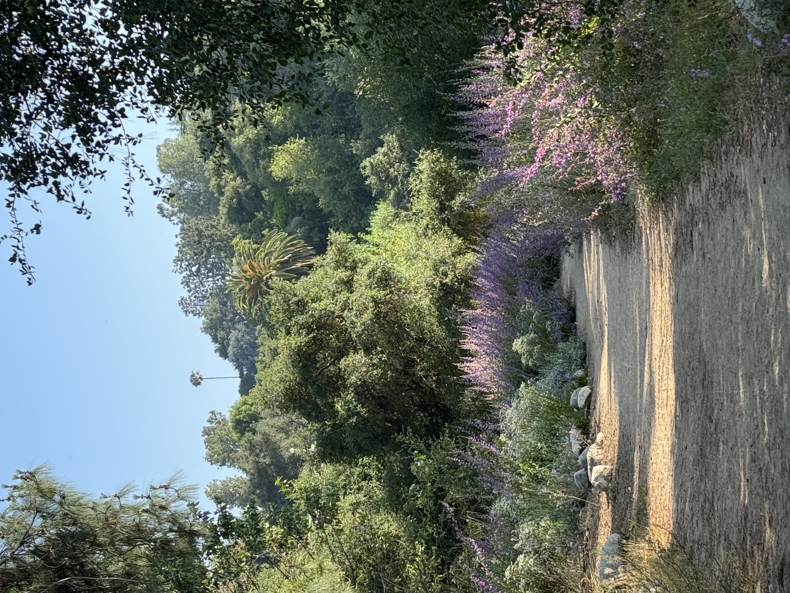
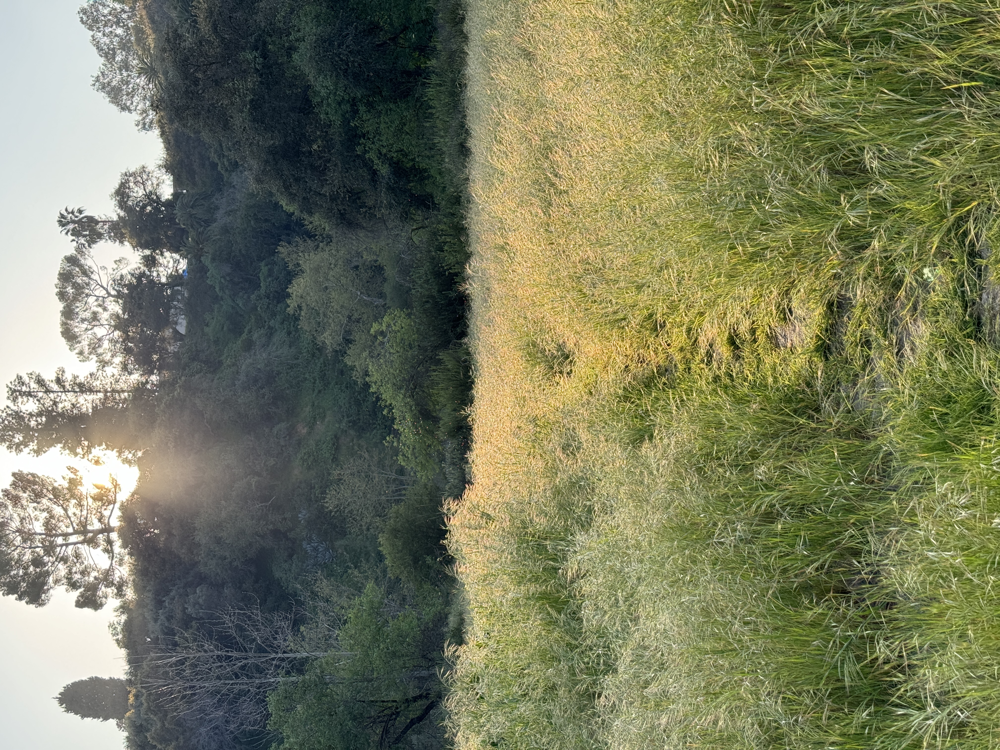
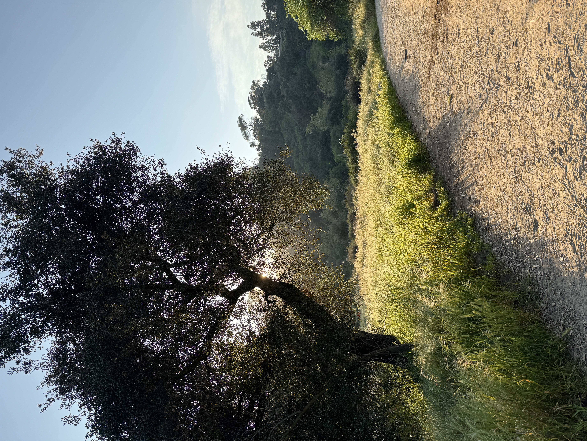
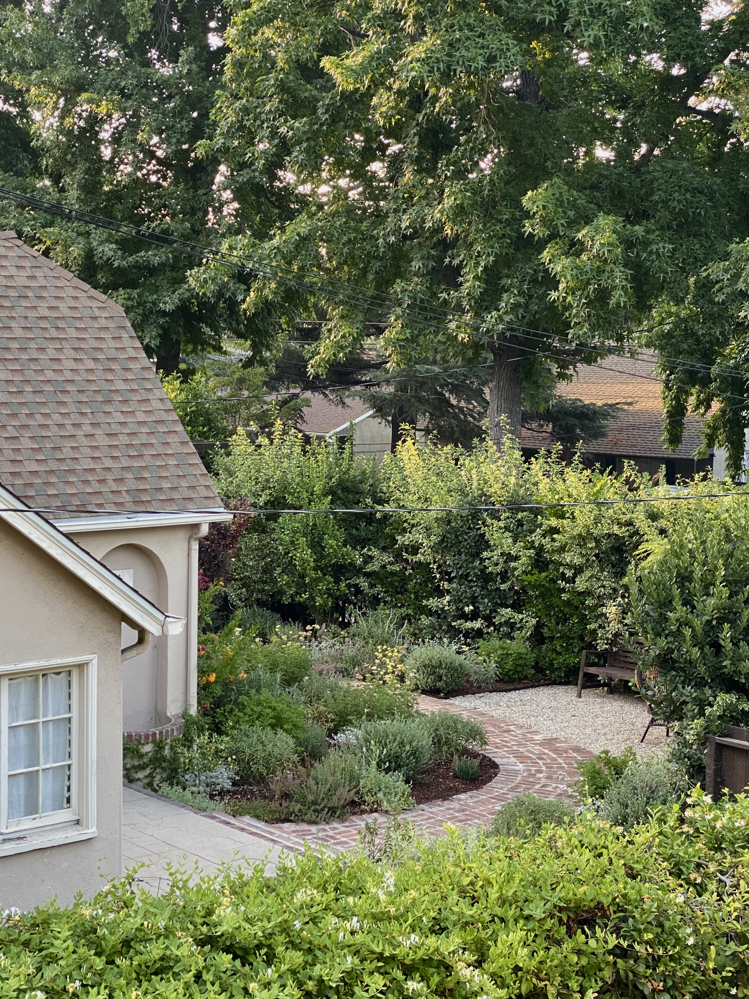

✦ ˑ ִֶָ 𓂃⊹ A sense of home ✦ ˑ ִֶָ 𓂃⊹



The Arroyo The Arroyo Seco Canyon is a historic 24-mile watershed that runs throughout Pasadena. Once I learned how to drive, going down the winding roads that wrap the valley became a daily routine for me. I miss summer walks down the trails and spring picnics with friends.




My Bedroom Window My view of my neighbor's house throughout the different seasons.


Red Dress A red dress hanging to dry in my neighbor's window.